|
About Me
I am an assistant professor at CMU in the Robotics Institute.
Prior to my appointment at CMU, I worked as a post-doc at UC Berkeley with Pieter Abbeel on deep reinforcement learning for object manipulation.
I completed my Ph.D. in computer science at Stanford working with Sebastian Thrun and Silvio Savarese on perception for self-driving cars. I also have a B.S. and M.S.
in mechanical engineering from MIT.
You can also download my CV.
My Group
I have the great fortune to be working with a tremendous group of Ph.D. students:
Brian Okorn (RI), co-advised with Martial Hebert
Xingyu Lin (RI)
Siddharth Ancha (MLD)
Thomas Weng (RI)
Wenxuan Zhou (RI)
Joining my Group
If you are interested in coming to CMU to join my group as a Ph.D. student, there is no need to email me. Just apply to CMU's Ph.D. program! You should apply to either the Robotics Institute Ph.D. program or the Machine Learning Ph.D. program and mention my name in your research statement. After you get accepted, you should contact me to discuss the possibility of working in my group.
Teaching
Spring 2018: 16-831: Statistical Techniques in Robotics
Spring 2019: 16-881: Seminar: Deep Reinforcement Learning for Robotics
Fall 2019: 16-831: Statistical Techniques in Robotics
Spring 2020: 16-881: Seminar: Deep Reinforcement Learning for Robotics
Research Interests
My research lies at the intersection of robotics, machine learning, and computer vision.
I am interested in developing methods for robotic perception and control that can allow robots to operate in the messy, cluttered environments of our daily lives. My approach is to design new deep learning / machine learning algorithms to understand environmental changes: how dynamic objects in the environment can move and how to affect the environment to achieve a desired task.
I have applied this idea of learning to understand environmental changes to
improve a robot's capabilities in two domains: object manipulation and autonomous driving. I am currently working on
learning to control indoor robots for various object manipulation tasks, dealing with questions about multi-task learning, robust learning, simulation to real-world transfer, and safety. Within autonomous driving, I have shown how, by modeling object
appearance changes, we can improve a robot's capabilities for every
part of the robot perception pipeline: segmentation, tracking,
velocity estimation, and object recognition. By teaching
robots to understand and affect environmental changes, I hope to open the door
to many new robotics applications, such as robots for our homes, assisted living
facilities, schools, hospitals, or disaster relief areas.
Preprints
Publications
|
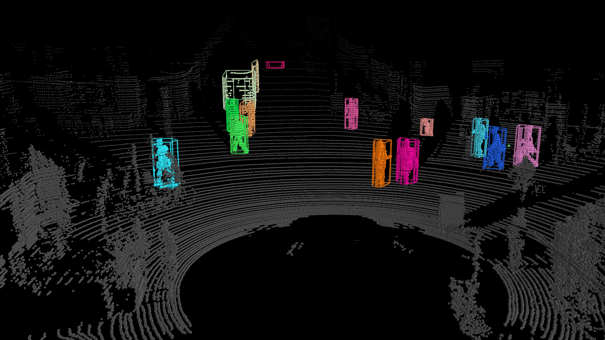
|
Learning to Optimally Segment Point Clouds
Peiyun Hu, David Held*, Deva Ramanan*
IEEE Robotics and Automation Letters (RA-L), 2020
|
|
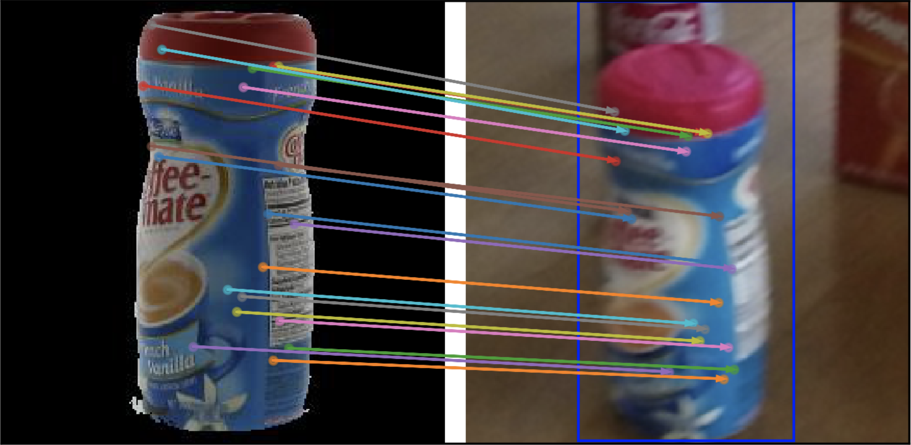
|
Combining Deep Learning and Verification for Precise Object Instance Detection
Siddharth Ancha*, Junyu Nan*, David Held
Conference on Robot Learning (CoRL), 2019
|
|
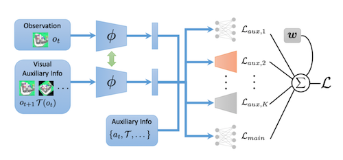
|
Adaptive Auxiliary Task Weighting for Reinforcement Learning
Xingyu Lin*, Harjatin Baweja*, George Kantor, David Held
Neural Information Processing Systems (NeurIPS), 2019
|
|
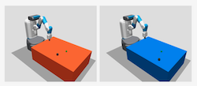
|
Adaptive Variance for Changing Sparse-Reward Environments
Xingyu Lin, Pengsheng Guo, Carlos Florensa, David Held
International Conference of Robotics and Automation (ICRA), 2019
|
|
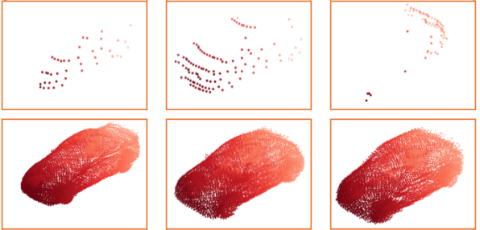
|
PCN: Point Completion Network - Best Paper Honorable Mention
Wentao Yuan, Tejas Khot, David Held, Christoph Mertz, Martial Hebert
International Conference on 3D Vision (3DV), 2018
|
|
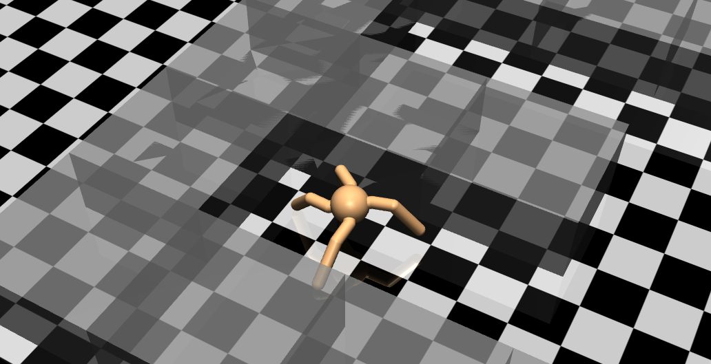
|
Automatic Goal Generation for Reinforcement Learning Agents
Carlos Florensa*, David Held*, Xinyang Geng*, Pieter Abbeel
International Conference on Machine Learning (ICML), 2018
|
|
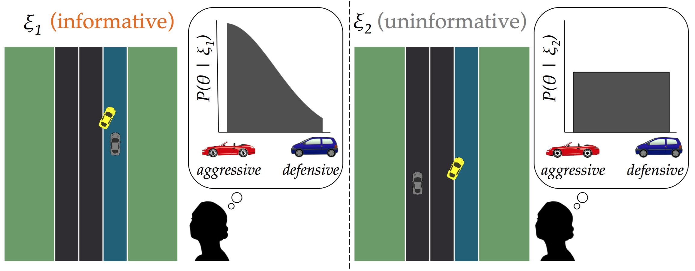
|
Enabling Robots to Communicate their Objectives
Sandy Han Huang, David Held, Pieter Abbeel, Anca D. Dragan
Autonomous Robotics (AURO), 2018
|
|
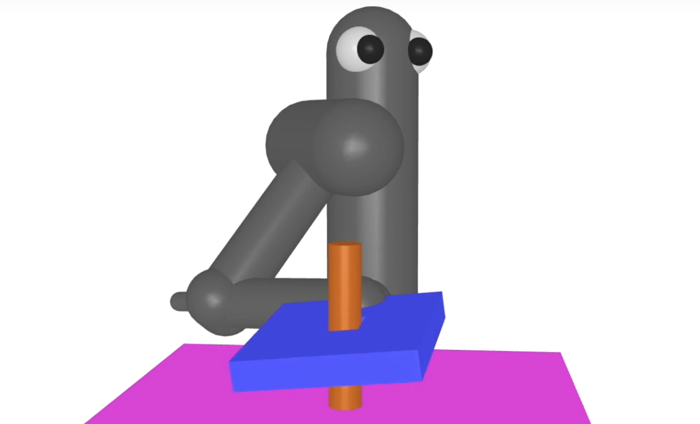
|
Reverse Curriculum Generation for Reinforcement Learning
Carlos Florensa, David Held, Markus Wulfmeier, Pieter Abbeel
Conference on Robot Learning (CoRL), 2017
|
|
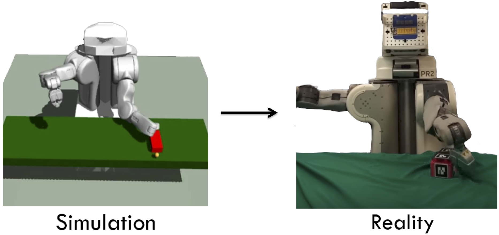
|
Policy Transfer via Modularity
Ignasi Clavera*, David Held*, Pieter Abbeel
International Conference on Intelligent Robots and Systems (IROS), 2017
|
|
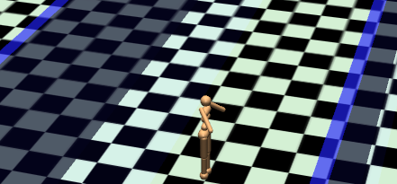
|
Constrained Policy Optimization
Joshua Achiam, David Held, Aviv Tamar, Pieter Abbeel
International Conference on Machine Learning (ICML), 2017
|
|
|
Enabling Robots to Communicate their Objectives
Sandy H. Huang, David Held, Pieter Abbeel, Anca D. Dragan
Robotics: Science and Systems (RSS), 2017
|
|
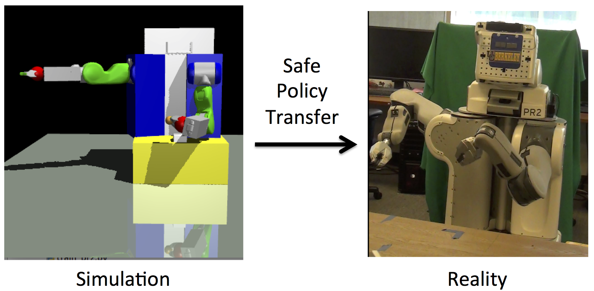
|
Probabilistically Safe Policy Transfer
David Held, Zoe McCarthy, Michael Zhang, Fred Shentu, Pieter Abbeel
International Conference on Robotics and Automation (ICRA), 2017
|
|
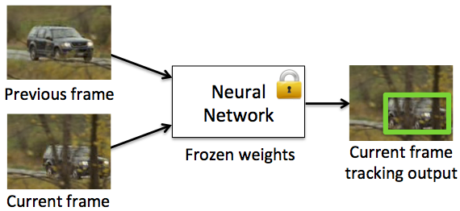
|
Learning to Track at 100 FPS with Deep Regression Networks
David Held, Sebastian Thrun, Silvio Savarese
European Conference on Computer Vision (ECCV), 2016
|
|
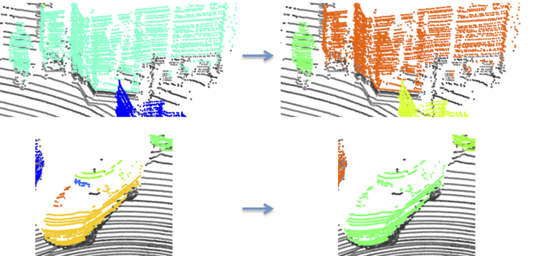
|
A Probabilistic Framework for Real-time 3D Segmentation using Spatial, Temporal, and Semantic Cues
David Held, Devin Guillory, Brice Rebsamen, Sebastian Thrun, Silvio Savarese
Robotics: Science and Systems (RSS), 2016
[Project Page]
|
|
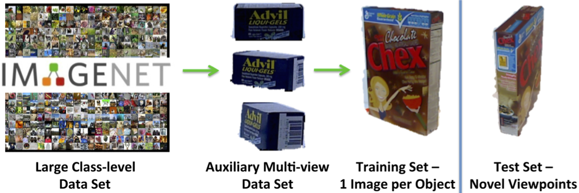
|
Robust Single-View Instance Recognition
David Held, Sebastian Thrun, Silvio Savarese
International Conference on Robotics and Automation (ICRA), 2016
|
|
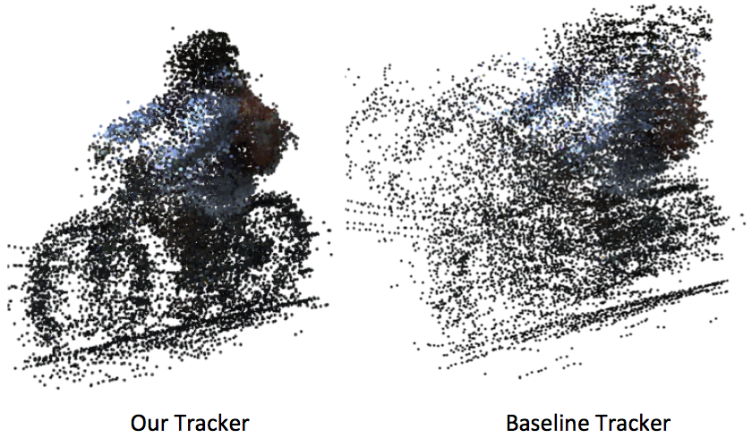
|
Robust Real-Time Tracking Combining 3D Shape, Color, and Motion
David Held, Jesse Levinson, Sebastian Thrun, Silvio Savarese
International Journal of Robotics Research (IJRR), 2016
|
|
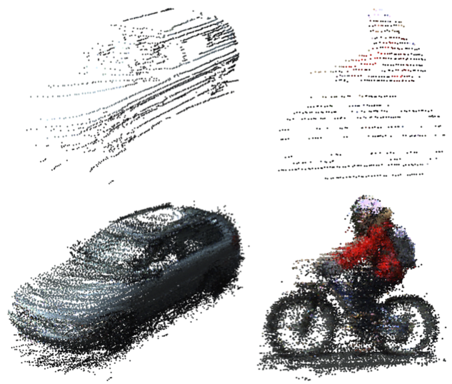
|
|
|
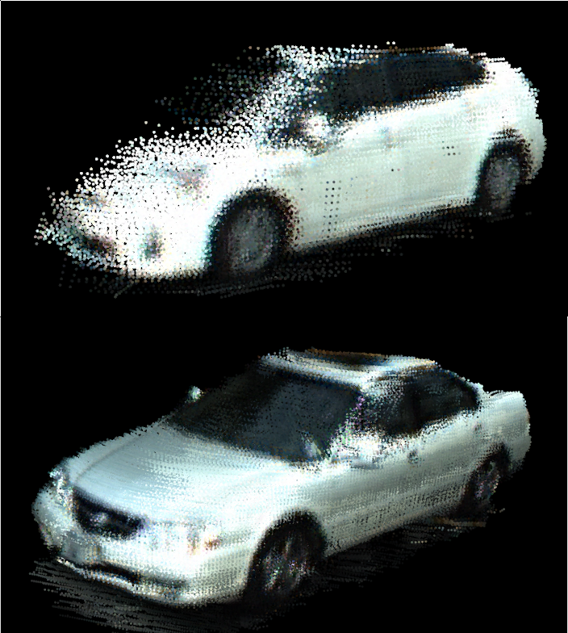
|
Precision Tracking with Sparse 3D and Dense Color 2D Data - Best Vision Paper Finalist
International Conference on Robotics and Automation
(ICRA), 2013
Precision tracking is important for predicting the
behavior of other cars in autonomous driving. We present a
novel method to combine laser and camera data to achieve
accurate velocity estimates of moving vehicles. We combine
sparse laser points with a high-resolution camera image to
obtain a dense colored point cloud. We use a color-augmented
search algorithm to align the dense color point clouds from
successive time frames for a moving vehicle, thereby obtaining
a precise estimate of the tracked vehicle’s velocity. Using this
alignment method, we obtain velocity estimates at a much
higher accuracy than previous methods. Through pre-filtering,
we are able to achieve near real time results. We also present an
online method for real-time use with accuracies close to that of
the full method. We present a novel approach to quantitatively
evaluate our velocity estimates by tracking a parked car in
a local reference frame in which it appears to be moving
relative to the ego vehicle. We use this evaluation method to
automatically quantitatively evaluate our tracking performance
on 466 separate tracked vehicles. Our method obtains a mean
absolute velocity error of 0.27 m/s and an RMS error of 0.47
m/s on this test set. We can also qualitatively evaluate our
method by building color 3D car models from moving vehicles.
We have thus demonstrated that our method can be used for
precision car tracking with applications to autonomous driving
and behavior modeling.
@inproceedings{2013-held-precision,
title = {Precision Tracking with Sparse 3D and Dense Color 2D Data},
author = {David Held and Jesse Levinson and Sebastian Thrun},
booktitle = {ICRA},
year = {2013} }
|
|
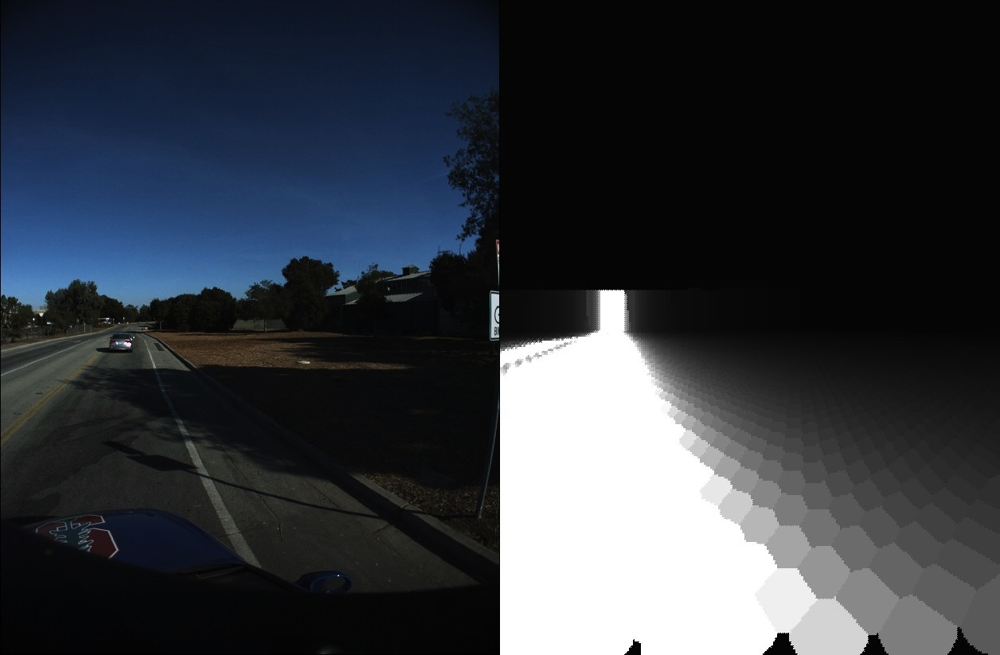
|
A Probabilistic Framework for Car Detection in Images using Context and Scale
International Conference on Robotics and Automation
(ICRA), 2012
Detecting cars in real-world images is an important task for autonomous driving, yet it remains unsolved. The system described in this paper takes advantage of context and scale to build a monocular single-frame image-based car detector that significantly outperforms the baseline. The system uses a probabilistic model to combine multiple forms of evidence for both context and scale to locate cars in a real-world image. We also use scale filtering to speed up our algorithm by a factor of 3.3 compared to the baseline. By using a calibrated camera and localization on a road map, we are able to obtain context and scale information from a single image without the use of a 3D laser. The system outperforms the baseline by an absolute 9.4% in overall average precision and 11.7% in average precision for cars smaller than 50 pixels in height, for which context and scale cues are especially important.
@INPROCEEDINGS{6224722,
author={Held, D. and Levinson, J. and Thrun, S.},
booktitle={Robotics and Automation (ICRA), 2012 IEEE International Conference on}, title={A probabilistic framework for car detection in images using context and scale},
year={2012},
month={may},
volume={},
number={},
pages={1628 -1634},
keywords={Cameras;Computational modeling;Context;Context modeling;Detectors;Roads;Training;automobiles;object detection;probability;traffic engineering computing;autonomous driving;car detection;context information;monocular single-frame image-based car detector;probabilistic framework;scale filtering;scale information;},
doi={10.1109/ICRA.2012.6224722},
ISSN={1050-4729}
}
|
| Older Work |
|
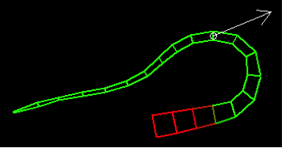
|
Characterizing Stiffness of Multi-Segment Flexible Arm Movements
International Conference on Robotics and Automation
(ICRA), 2012
A number of robotic studies have recently turned to biological inspiration in designing control schemes for flexible robots. Examples of such robots include continuous manipulators inspired by the octopus arm. However, the control strategies used by an octopus in moving its arms are still not fully understood. Starting from a dynamic model of an octopus arm and a given set of muscle activations, we develop a simulation technique to characterize the stiffness throughout a motion and at multiple points along the arm. By applying this technique to reaching and bending motions, we gain a number of insights that can help a control engineer design a biologically inspired impedance control scheme for a flexible robot arm. The framework developed is a general one that can be applied to any motion for any dynamic model. We also propose a theoretical analysis to efficiently estimate the stiffness analytically given a set of muscle activations. This analysis can be used to quickly evaluate the stiffness for new static configurations and dynamic movements.
@INPROCEEDINGS{6225070,
author={Held, D. and Yekutieli, Y. and Flash, T.},
booktitle={Robotics and Automation (ICRA), 2012 IEEE International Conference on}, title={Characterizing the stiffness of a multi-segment flexible arm during motion},
year={2012},
month={may},
volume={},
number={},
pages={3825 -3832},
keywords={Computational modeling;Force;Motion segmentation;Muscles;Shape;Trajectory;control system synthesis;dexterous manipulators;elasticity;flexible manipulators;manipulator dynamics;motion control;muscle;bending motion control;biologically inspired impedance control;control scheme design;dynamic movement;multisegment flexible robot arm;muscle activation;octopus arm;robot dynamic model;stiffness;},
doi={10.1109/ICRA.2012.6225070},
ISSN={1050-4729}
}
|
|
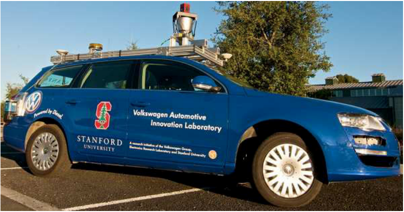
|
Towards fully autonomous driving: Systems and algorithms
Jesse Levinson, Jake Askeland, Jan Becker, Jennifer Dolson, David Held, Soeren Kammel,
J. Zico Kolter, Dirk Langer, Oliver Pink, Vaughan Pratt, Michael Sokolsky,
Ganymed Stanek, David Stavens, Alex Teichman, Moritz Werling, and Sebastian Thrun
Intelligent Vehicles Symposium (IV), 2011.
In order to achieve autonomous operation of a vehicle in urban situations with unpredictable traffic, several realtime systems must interoperate, including environment perception, localization, planning, and control. In addition, a robust vehicle platform with appropriate sensors, computational hardware, networking, and software infrastructure is essential. We previously published an overview of Junior, Stanford's entry in the 2007 DARPA Urban Challenge. This race was a closed-course competition which, while historic and inciting much progress in the field, was not fully representative of the situations that exist in the real world. In this paper, we present a summary of our recent research towards the goal of enabling safe and robust autonomous operation in more realistic situations. First, a trio of unsupervised algorithms automatically calibrates our 64-beam rotating LIDAR with accuracy superior to tedious hand measurements. We then generate high-resolution maps of the environment which are subsequently used for online localization with centimeter accuracy. Improved perception and recognition algorithms now enable Junior to track and classify obstacles as cyclists, pedestrians, and vehicles; traffic lights are detected as well. A new planning system uses this incoming data to generate thousands of candidate trajectories per second, choosing the optimal path dynamically. The improved controller continuously selects throttle, brake, and steering actuations that maximize comfort and minimize trajectory error. All of these algorithms work in sun or rain and during the day or night. With these systems operating together, Junior has successfully logged hundreds of miles of autonomous operation in a variety of real-life conditions.
@INPROCEEDINGS{5940562,
author={Levinson, J. and Askeland, J. and Becker, J. and Dolson, J. and Held, D. and Kammel, S. and Kolter, J.Z. and Langer, D. and Pink, O. and Pratt, V. and Sokolsky, M. and Stanek, G. and Stavens, D. and Teichman, A. and Werling, M. and Thrun, S.},
booktitle={Intelligent Vehicles Symposium (IV), 2011 IEEE}, title={Towards fully autonomous driving: Systems and algorithms},
year={2011},
month={june},
volume={},
number={},
pages={163 -168},
keywords={Calibration;Laser beams;Planning;Software;Trajectory;Vehicle dynamics;Vehicles;computer vision;mobile robots;remotely operated vehicles;DARPA urban challenge;LIDAR;autonomous driving;closed-course competition;environment perception;obstacle classification;obstacle tracking;online localization;planning system;realtime system;recognition algorithm;robust autonomous operation;robust vehicle platform;software infrastructure;unpredictable traffic;},
doi={10.1109/IVS.2011.5940562},
ISSN={1931-0587}}
|
|
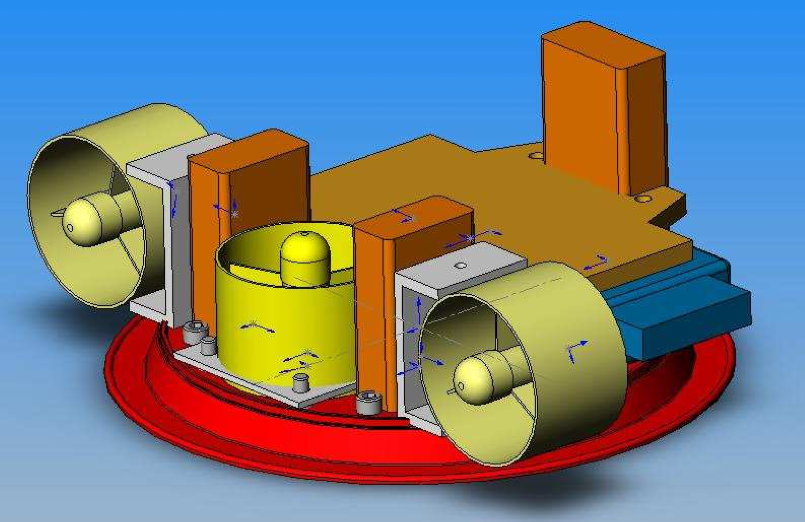
|
MVWT-II: The Second Generation Caltech Multi-Vehicle Wireless Testbed
Zhipu Jinh, Stephen Waydo, Elisabeth B. Wildanger, Michael Lammers,
Hans Scholze, Peter Foley,
David Held,
Richard M. Murray
American Control Conference (ACC), 2004
The Caltech Multi-Vehicle Wireless Testbed is an experimental platform for validating theoretical advances in multiple-vehicle coordination and cooperation, real-time networked control system, and distributed computation. This paper describes the design and development of an additional fleet of 12 second-generation vehicles. These vehicles are hovercrafts and designed to have lower mass and friction as well as smaller size than the first generation vehicles. These hovercrafts combined with the outdoor wireless testbed provide a perfect hardware platform for RoboFlag competition.
@INPROCEEDINGS{1384698,
author={Jin, Z. and Waydo, S. and Wildanger, E.B. and Lammers, M. and Scholze, H. and Foley, P. and Held, D. and Murray, R.M.},
booktitle={American Control Conference, 2004. Proceedings of the 2004}, title={MVWT-II: the second generation Caltech Multi-Vehicle Wireless Testbed},
year={2004},
month={30 2004-july 2},
volume={6},
number={},
pages={5321 -5326 vol.6},
keywords={design engineering;games of skill;hovercraft;mobile robots;multi-robot systems;real-time systems;Caltech MultiVehicle Wireless Testbed;RoboFlag competition;distributed computation;hardware platform;hovercraft design;multivehicle cooperation;multivehicle coordination;outdoor wireless testbed;real time networked control system;second generation vehicles;},
doi={},
ISSN={0743-1619}}
|
|
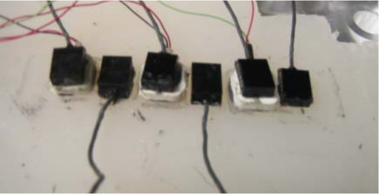
|
Surface waves and spatial localization in vibrotactile displays
Haptics Symposium, 2010
The locus of vibrotactile stimulation is often used as an encoding cue in tactile displays developed for spatial orientation and navigation. However, the ability to localize the site of stimulation varies as a function of the number and configuration of the vibrating motors (tactors) in the display. As the inter-tactor distance decreases it has been found that the ability to localize a point of stimulation diminishes. One factor that may limit tactile localization is the surface wave elicited by vibration that propagates across the skin at a velocity that depends on the frequency of vibration and the viscoelastic properties of the skin. A material that simulates the stress-strain characteristics of human skin was used to measure the characteristics of surface waves during vibrotactile stimulation. Accelerometers glued to the simulated skin at fixed distances from the activated tactors were used to measure the amplitude of the acceleration as a function of distance as well as the propagation velocity. It was determined that at a distance of 60 mm from the site of activation, the surface wave was on average attenuated to less than 1 m/s^2. This suggests that for this type of tactor an inter-tactor distance of at least 60 mm would be optimal for a display in which the locus of stimulation is used as an encoding variable. It seems that much of the difficulty encountered in identifying the locus of a vibrotactile stimulus in multi-tactor displays may result from small intertactor distances.
@INPROCEEDINGS{5444673,
author={Jones, L.A. and Held, D. and Hunter, I.},
booktitle={Haptics Symposium, 2010 IEEE}, title={Surface waves and spatial localization in vibrotactile displays},
year={2010},
month={march},
volume={},
number={},
pages={91 -94},
keywords={Accelerometers;Displays;Elasticity;Encoding;Frequency;Humans;Navigation;Skin;Surface waves;Viscosity;accelerometers;haptic interfaces;accelerometers;distance 60 mm;inter-tactor distance;spatial localization;stimulation locus;stress-strain characteristics;surface waves;vibrating motors;vibrotactile displays;vibrotactile stimulation;localization;tactile display;tactons;torso;touch;},
doi={10.1109/HAPTIC.2010.5444673},
ISSN={}}
|
|
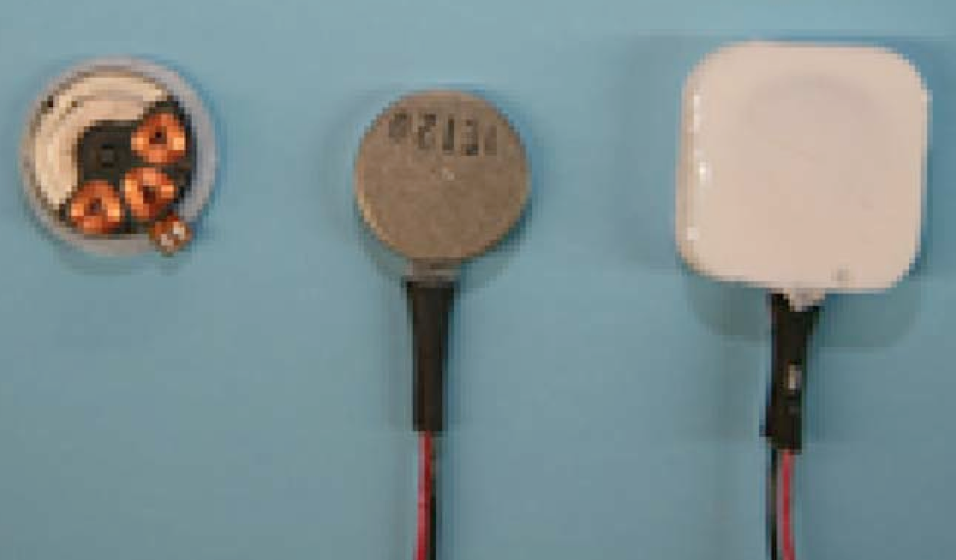
|
Characterization of Tactors Used in Vibrotactile Displays
Journal of Computing and Information Science in Engineering, 2008
A series of experiments was conducted to evaluate the operating characteristics of small DC motors that are often in tactile displays. The results indicated that these motors are reliable in terms of their frequency and amplitude of oscillation, but that the frequency varies across motors. A simulated skin material was developed to provide a substrate for evaluating the performance of the motors. There was a marked attenuation in frequency when the tactors were on this material and the surface waves could be detected 60 mm from the site of activation. These findings suggest that the spacing between tactors should be at least 60-80 mm if tactile cues are used to locate events in the environment.
@article{jones_held:044501,
author = {Lynette A. Jones and David A. Held},
collaboration = {},
title = {Characterization of Tactors Used in Vibrotactile Displays},
publisher = {ASME},
year = {2008},
journal = {Journal of Computing and Information Science in Engineering},
volume = {8},
number = {4},
eid = {044501},
numpages = {5},
pages = {044501},
keywords = {DC motors; display devices; haptic interfaces},
url = {http://link.aip.org/link/?CIS/8/044501/1},
doi = {10.1115/1.2988384}
}
|
|
Elliot Dunlap Smith Hall (EDSH), Room 213
|